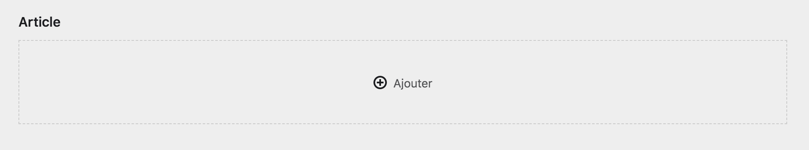
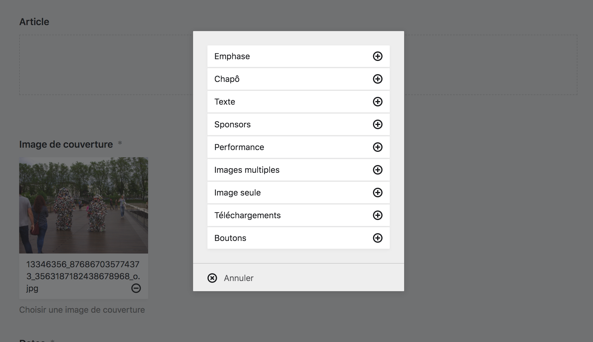
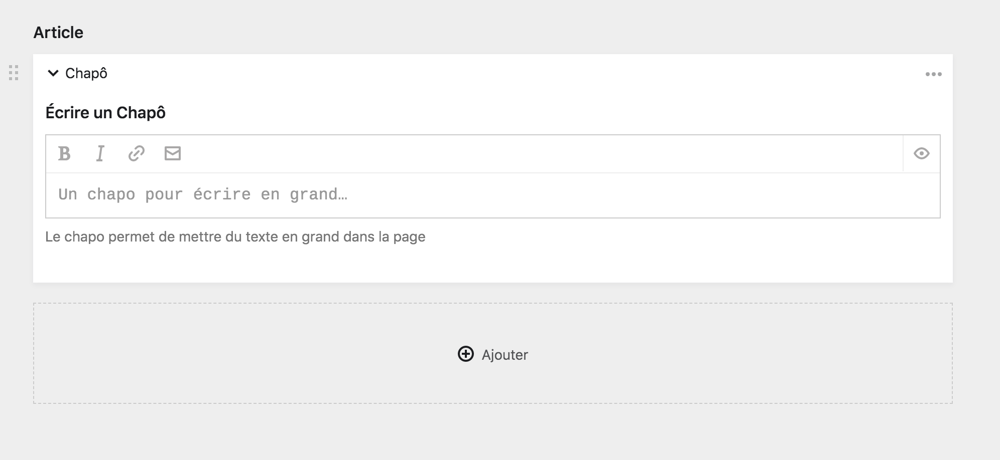
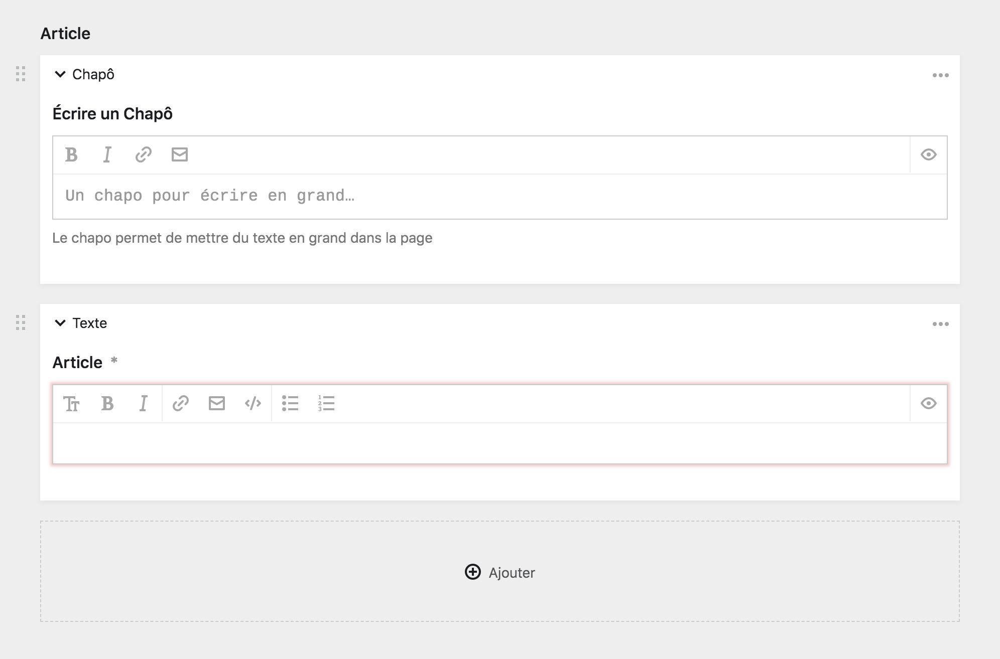
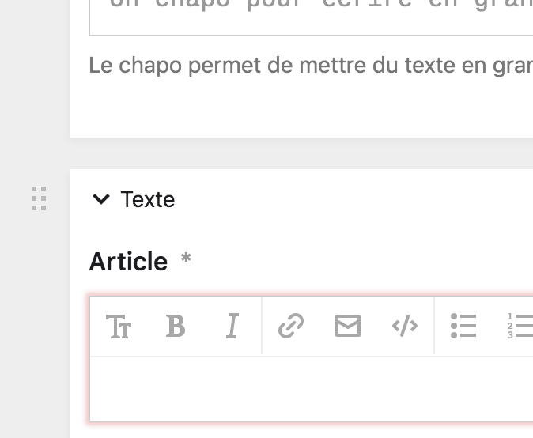
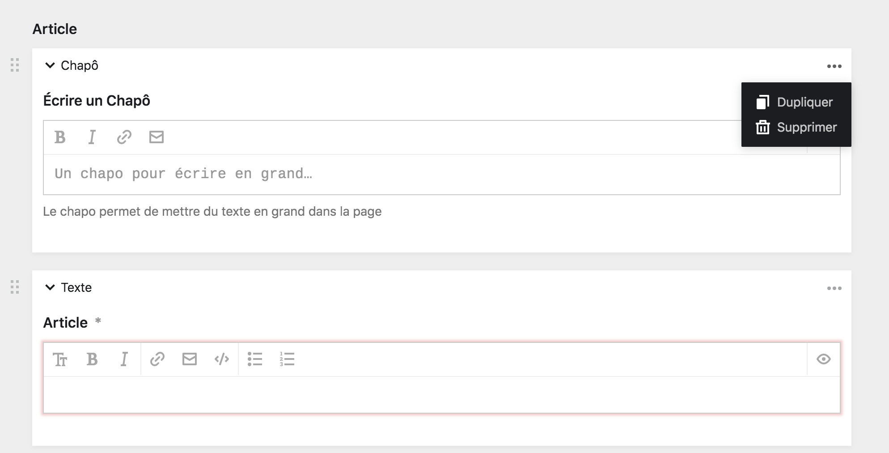
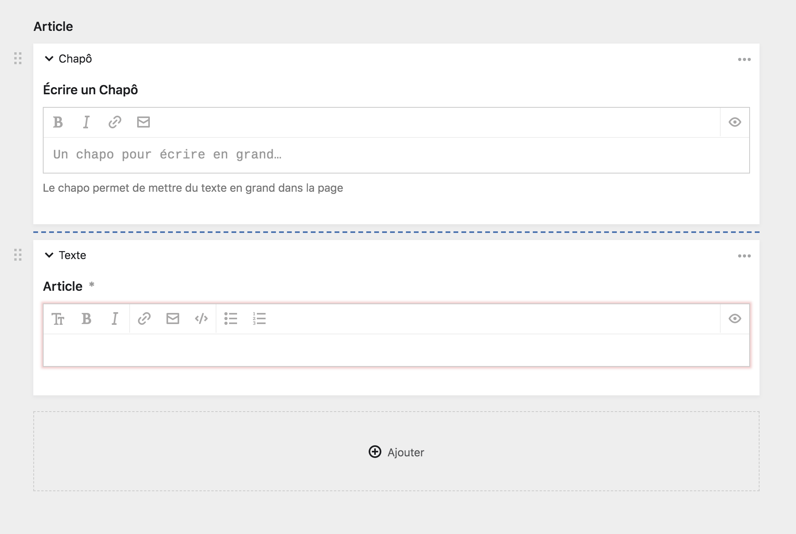

Fonctionnement de l’éditeur de bloc #
L’éditeur de blocs fonctionne comme un aggrégateur de forumlaires. Différents types de champs pré-établis sont mis à disposition et vous pouvez choisir parmi l’un ou l’autre bloc, les enchaîner, les déplacer, les supprimer, etc.
Cette section couvre les détails techniques ce concernant pour que vous puissiez passer à la création le plus vite possible. De plus, comme le reste du Panel, l’éditeur de blocs est très intuitif.
Le bloc vide #
De prime abord, vous allez être confronté à une vide, et à un bouton + ajouter à partir duquel vous pourrez ajouter votre premier bloc à la page. Au survol, la zone devient bleue.

Ajouter un bloc #
Cliquer sur le bouton + ajouter fait appraître une boîte modale à partir de laquelle vous pouvez choisir quel bloc vous souhaitez ajouter à la page. Vous pouvez alors selectionner un bloc et cliquez sur le bouton +.
Pour savoir quel type de bloc choisir, rendez-vous sur la page Différents types de blocs.

Aspect d’un bloc #
Votre premier bloc ajouté, il vous présente un formulaire vide à remplir, similaire à tous les autres formulaires du Panel. En dessous du formulaire, vous retrouvez à nouveau le bouton + ajouter, qui vous permet d’additionner un nouveau bloc à la page, et ainsi de suite.
Dans l’exemple suivant, un bloc Chapô à été ajouté à la page.

Ensuite, un nouveau bloc Article à été ajouté en dessous de celui-ci.

Déplacer les blocs #
À gauche des blocs, vous retrouvez un bouton Déplacer, composé de six petits carrés grisés. Si vous cliquez dessus, vous pourrez déplacer les blocs les uns au dessus des autres, remontrer ou descendre un bloc, etc.

Options des blocs #
À droite des blocs, se trouve le bouton … des options supplémentaires. Il fait apparaître un menu déroulant avec de nouvelles options pour le bloc.

| Options | Description |
|---|---|
| Dupliquer | Ce bouton vous permet de créer une copie conforme du bloc juste en dessous de celui-ci. Utile si vous souhaitez créer des blocs à la chaîne, ou pour reproduire un bloc en particulier |
| Supprimer | Ce bouton vous permet de supprimer définitivement un bloc, et d’effacer son contenu. |
Ajouter un bloc entre deux blocs #
Si vous passez la souris entre deux blocs, vous verrez apparaître une ligne pointillée bleue. C’est une raccourci pour ajouter un nouveau bloc entre deux blocs existants.
